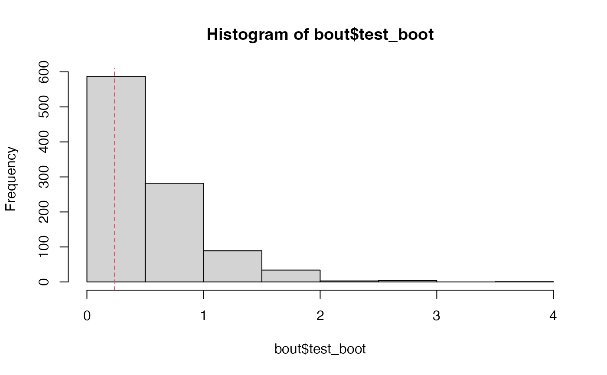

Iteratively resample individuals/genotypes, calculating the U-statistic for each resample, and use these resamples to test against the null of no equilibrium.
Arguments
- n
One of two forms
- A vector of length ploidy + 1
Element i is the number of individuals with genotype i.
- A matrix with nsamp rows and ploidy+1 columns
Element (i, j) is the posterior probability that individual i has ploidy j-1.
- nboot
The number of bootstrap samples to run.
- more
A logical. Should we return the bootstrap replicates (
FALSE) or just the p-value, with 95% confidence interval of the p-value (TRUE).
Value
A list with some or all of the following elements
p_hweThe bootstrap p-value against the null of equilibrium.
p_ciThe 95% confidence interval of p_hwe.
alpha_bootThe bootstrap samples of the double reduction parameter.
u_bootThe bootstrap samples of the U-statistic.
Examples
set.seed(1)
ploidy <- 6
size <- 100
r <- 0.5
alpha <- 0.1
qvec <- hwefreq(r = r, alpha = alpha, ploidy = ploidy)
nvec <- c(rmultinom(n = 1, size = size, prob = qvec))
bout <- hweboot(n = nvec, more = TRUE, nboot = 1000)
bout$p_hwe
#> [1] 0.746
bout$p_ci
#> [1] 0.7178207 0.7727228
#> attr(,"conf.level")
#> [1] 0.95
hist(bout$test_boot)
abline(v = bout$test_stat, lty = 2, col = 2)
